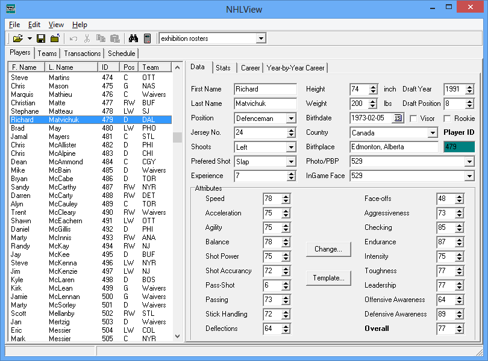
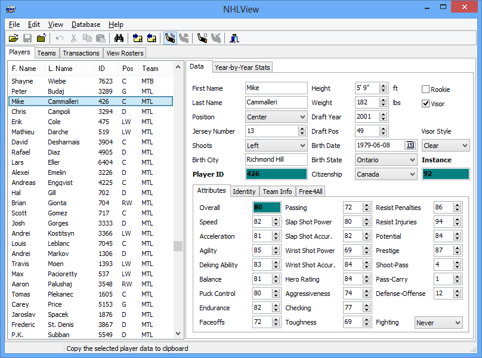

NHLView NG is an editor of roster files for the NHL video game series from EA Sports ® on generation 3 consoles, Playstation 3 ® and Xbox 360 ®. The program allows you to edit player and team data from the comfort of your PC in a much more accessible fashion than the bulky in-game screens. The project's origin goes back to year 2000 when I created the first editor for NHL 2000 for PC. It looked something like this:

NHLView 2000
Over the next couple of years, the editor evolved and by release of NHL 2003, two more versions were released which were able to edit rosters up to NHL 2003. Back then, the game used *.dbf format for rosters which was substantially different from the one the game uses today.
Then, NHL 2004 came out and with it came the new roster format, called t3db. It became the new standard for databases used by EA games and has been used since in Madden, FIFA and NHL series all the way to 2014. It's in 2004 that the t3db engine powering today's NHLView NG was born. After months of work decrypting the format and its protections, NHLView 2004 came out as a complete rewrite of the initial editor. It went to serve the PC roster modders all the way till NHL 09, the last version released on PC. Since 2004, the roster format on PC hasn't changed that much. After all the work was done to allow users edit basic information stored in the roster database, there was a lot of time to add convenience features to NHLView over the years. By the time EA decommissioned NHL series on PC in 2009, NHLView allowed not only edit player data and attributes but also viewing player photos, listening to play-by-play files, mass editing attributes, importing/exporting player data in file and clipboard.

NHLView 2004
Along came the new generation consoles and EA decided to stop producing NHL series on PC. Moreover, the consoles came in protected by advanced security schemes that made it initially impossible edit the rosters. While it was possible to view the roster files, any attempt to modify them triggered checksum validation errors. Still, the fact that viewing the roster database wasn't prohibited made it possible the continuing development of t3db engine ever since NHL on PS3 and XBox360 came out. It was not until 2013 that enough progress was made in decrypting PS3 security algorithms and made it possible for NHLView NG to finally be able to write the roster files in a format accepted by the consoles.
While the interface of NHLView NG resembles its predecessors, it is yet another complete rewrite due to the fact that the structure of console roster files is different enough from PC roster files even though both still use t3db database format. As such, none of those great convenience features that accumulated in NHLView for PC are available in the current version of NHLView NG. As a young program it currently only offers basic editing functionality, but the hope is that with time additional features will be added. Moreover, it is bound to have bugs in the early going, so if you are handling the files that you do not want to lose, please make a BACKUP in order for them not to become irreversibly corrupted. Every effort is made to avoid these situations, but should it happen - remember: this program is offered for use at your own risk. Please be patient and do help by reporting the bugs you encounter. The best way to report a bug is to register and post it in NHLView NG forum.
Because NHLView on PC is obsolete due to NHL series not being released on PC anymore, this documentation will sometimes refer to NHLView NG as simply NHLView.